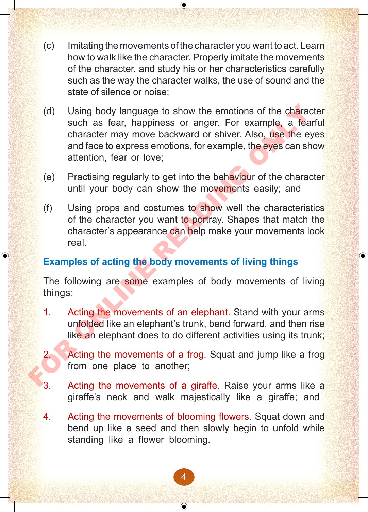

(c)
Imitating the movements of the character you want to act.
Learn how to walk like the character.
Properly imitate the movements of the character, and study his or her characteristics carefully such as the way the character walks, the use of sound and the state of silence or noise;
(d)
Using body language to show the emotions of the character such as fear, happiness or anger.
For example, a fearful character may move backward or shiver.
Also, use the eyes and face to express emotions, for example, the eyes can show attention, fear or love;
(e)
Practising regularly to get into the behaviour of the character until your body can show the movements easily; and
(f)
Using props and costumes to show well the characteristics of the character you want to portray.
Shapes that match the character’s appearance can help make your movements look real.
Examples of acting the body movements of living things
The following are some examples of body movements of living things:
1.
Acting the movements of an elephant.
Stand with your arms unfolded like an elephant’s trunk, bend forward, and then rise like an elephant does to do different activities using its trunk;
2.
Acting the movements of a frog.
Squat and jump like a frog from one place to another;
3.
Acting the movements of a giraffe.
Raise your arms like a giraffe’s neck and walk majestically like a giraffe; and
4.
Acting the movements of blooming flowers.
Squat down and bend up like a seed and then slowly begin to unfold while standing like a flower blooming.